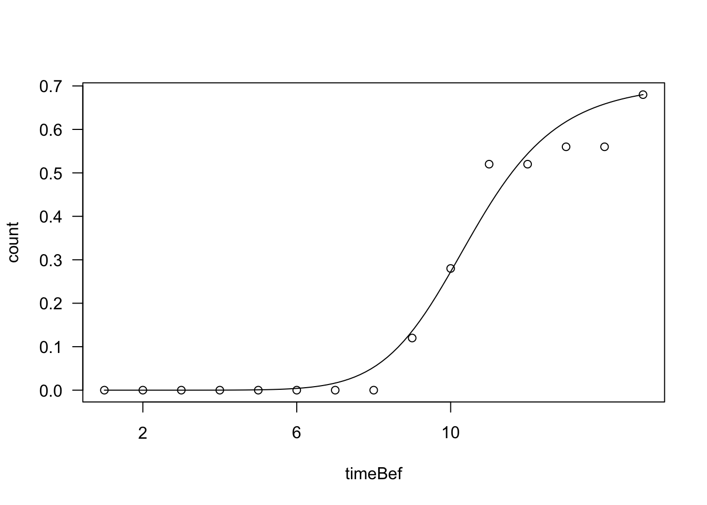
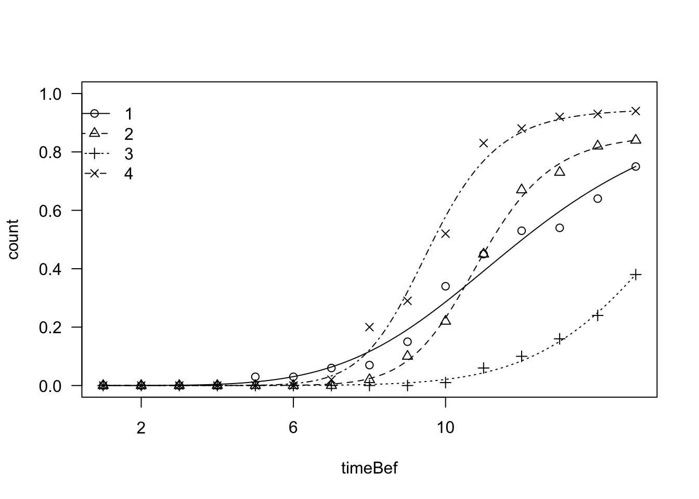

#Introduction
Seed scientists are often concerned with several seed lots, which show different germination behaviours. For instance, they can have different plant species, or one single plant species submitted to different treatments, e.g. different temperatures, different light conditions, different types of priming. One typical question is: how do I compare the germination behaviour of these different seed lots?
Let’s take a practical approach and start from an appropriate example: we studied the germination behaviour for seeds of a plant species (Verbascum arcturus, BTW…), in different conditions. In detail, we considered the factorial combinations of two storage periods (LONG and SHORT storage) and two temperature regimes (FIX: constant daily temperature of 20°C; ALT: alternating daily temperature regime, with 25°C during daytime and 15°C during night time, with a 12:12h photoperiod). If you are not a seed scientist you may wonder why we made such an assay; well, there is evidence that, for some plant species, the germination ability improves over time after maturation. Furthermore, some seeds do not germinate well at a constant daily temperature regime, favouring daily temperature fluctuations. These are all mechanisms by which seeds can recognise that they are in favourable conditions (e.g. they are close to the soil surface), so that the chances for plant establishment are maximised. Clever, isn’t it?
But let’s go back to our assay: we had four combinations (LONG-FIX, LONG-ALT, SHORT-FIX and SHORT-ALT) and four replicates for each combination. One replicate consisted of a Petri dish, that is a small plastic box containing humid blotting paper, where we put 25 seeds of Verbascum. In all, there were 16 Petri dishes: we put them in climatic chambers with the appropriate conditions and made daily inspections: germinated seeds were counted and removed from the dish. We did this for 15 days, until no more germinations could be observed.
The dataset is available from a gitHub repository: let’s load it and have a look.
dataset <- read.csv("https://raw.githubusercontent.com/OnofriAndreaPG/agroBioData/master/TempStorage.csv", header = T, check.names = F)
head(dataset)
## Dish Storage Temp 1 2 3 4 5 6 7 8 9 10 11 12 13 14 15
## 1 1 Low Fix 0 0 0 0 0 0 0 0 3 4 6 0 1 0 3
## 2 2 Low Fix 0 0 0 0 1 0 0 0 2 7 2 3 0 5 1
## 3 3 Low Fix 0 0 0 0 1 0 0 1 3 5 2 4 0 1 3
## 4 4 Low Fix 0 0 0 0 1 0 3 0 0 3 1 1 0 4 4
## 5 5 High Fix 0 0 0 0 0 0 0 0 1 2 5 4 2 3 0
## 6 6 High Fix 0 0 0 0 0 0 0 0 2 2 7 8 1 2 1We have one row per Petri dish; the first three columns show dish id, storage and temperature conditions. The next 15 columns represent the inspection times (from 1 to 15) and the counts of germinated seeds. The research question is:
Is germination behaviour affected by storage and temperature conditions?
One possible line of attack is to take a summary measure for each dish, e.g. the total number of germinated seeds. Taking a single value for each dish brings us back to more common methods of data analysis: for example, we can fit some sort of GLM to test the significance of effects (storage, temperature and their interaction), within a fully factorial design.
Although the above method is not wrong, undoubtedly, it is sub-optimal. Indeed, dishes may contain the same total number of germinated seeds, but, nonetheless, they may differ for some other germination traits, such as velocity or uniformity. Clearly, we would like to express an overall judgment about the seed lots, not only about one charateristic of the seed lot. We are not specifically asking: “do the seed lots differ for their germination capability?”. We are, more generally, asking “are the seed lots different?”.
Therefore, a different method of analysis should be sought, which considers the entire time series (from 1 to 15 days) and not only one single summary measure. This method exists and it is available within the time-to-event platform, which has shown very useful and appropriate for seed germination studies (Onofri et al., 2011; Ritz et al., 2013; Onofri et al., 2019).
It is necessary to re-organise the dataset in a more useful way. A good format can be obtained by using the ‘makeDrm()’ function in the ‘drcSeedGerm’ package, which can be installed from gitHub (see the code at: this link). The function needs to receive a dataframe storing the counts (dataset[,4:18]), a dataframe storing the factor variables (dataset[,2:3]), a vector with the number of seeds in each Petri dish (rep(25, 16)) and a vector of monitoring times.
library(drcSeedGerm)
datasetR <- makeDrm(dataset[,4:18], dataset[,2:3], rep(25, 16), 1:15)
head(datasetR, 16)
## Storage Temp Dish timeBef timeAf count nCum propCum
## 1 Low Fix 1 0 1 0 0 0.00
## 1.1 Low Fix 1 1 2 0 0 0.00
## 1.2 Low Fix 1 2 3 0 0 0.00
## 1.3 Low Fix 1 3 4 0 0 0.00
## 1.4 Low Fix 1 4 5 0 0 0.00
## 1.5 Low Fix 1 5 6 0 0 0.00
## 1.6 Low Fix 1 6 7 0 0 0.00
## 1.7 Low Fix 1 7 8 0 0 0.00
## 1.8 Low Fix 1 8 9 3 3 0.12
## 1.9 Low Fix 1 9 10 4 7 0.28
## 1.10 Low Fix 1 10 11 6 13 0.52
## 1.11 Low Fix 1 11 12 0 13 0.52
## 1.12 Low Fix 1 12 13 1 14 0.56
## 1.13 Low Fix 1 13 14 0 14 0.56
## 1.14 Low Fix 1 14 15 3 17 0.68
## 1.15 Low Fix 1 15 Inf 8 NA NAThe snippet above shows the first dish. The column ‘timeAf’ contains the time when the inspection was made and the column ‘count’ contains the number of germinated seeds (e.g. 9 seeds were counted at day 9). These seeds did not germinate exactly at day 9; they germinated within the interval between two inspections, that is between day 8 and day 9. The beginning of the interval is given in the variable ‘timeBef’. The cumulative counts of germinated seeds are in the column ‘nCum’; these cumulative counts have been converted into cumulative proportions by dividing by 25 (i.e., the total number of seeds in a dish; see the column ‘propCum’).
We can use a time-to-event model to parameterise the germination time-course for this dish. This is easily done by using the ‘drm()’ function in the ‘drc’ package (Ritz et al., 2013):
modPre <- drm(count ~ timeBef + timeAf, fct = LL.3(), data = datasetR,
type = "event", subset = c(Dish == 1))
plot(modPre, log = "")
Please, note the following:
As we have determined the germination time-course for dish 1, we can do the same for all dishes. However, we have to instruct ‘drm()’ to define a different curve for each combination of storage and temperature. It is necessary to make an appropriate use of the ‘curveid’ argument. Please, see below.
mod1 <- drm(count ~ timeBef + timeAf, fct = LL.3(), data = datasetR,
type = "event", curveid = Temp:Storage)
plot(mod1, log = "", legendPos = c(2, 1))
It appears that there are visible differences between the curves (the legend considers the curves in alphabetical order, i.e. 1: Fix-Low, 2: Fix-High, 3: Alt-Low and 4: Alt-High). We can test that the curves are similar by coding a reduced model, where we have only one pooled curve for all treatment levels. It is enough to remove the ‘curveid’ argument.
modNull <- drm(count ~ timeBef + timeAf, fct = LL.3(), data = datasetR,
type = "event")
anova(mod1, modNull, test = "Chisq")
##
## 1st model
## fct: LL.3()
## pmodels: Temp:Storage (for all parameters)
## 2nd model
## fct: LL.3()
## pmodels: 1 (for all parameters)
## ANOVA-like table
##
## ModelDf Loglik Df LR value p value
## 1st model 244 -753.54
## 2nd model 253 -854.93 9 202.77 0Now we can compare the full model (four curves) with the reduced model (one common curve) by using a Likelihood Ratio Test, which is approximately distributed as a Chi-square. The test is highly significant. Of course, we can also test some other hypotheses. For example, we can code a model with different curves for storage times, assuming that the effect of temperature is irrelevant:
mod2 <- drm(count ~ timeBef + timeAf, fct = LL.3(), data = datasetR,
type = "event", curveid = Storage)
anova(mod1, mod2, test = "Chisq")
##
## 1st model
## fct: LL.3()
## pmodels: Temp:Storage (for all parameters)
## 2nd model
## fct: LL.3()
## pmodels: Storage (for all parameters)
## ANOVA-like table
##
## ModelDf Loglik Df LR value p value
## 1st model 244 -753.54
## 2nd model 250 -797.26 6 87.436 0We see that the effect of temperature is significant. Similarly, we can test the effect of storage:
mod3 <- drm(count ~ timeBef + timeAf, fct = LL.3(), data = datasetR,
type = "event", curveid = Temp)
anova(mod1, mod3, test = "Chisq")
##
## 1st model
## fct: LL.3()
## pmodels: Temp:Storage (for all parameters)
## 2nd model
## fct: LL.3()
## pmodels: Temp (for all parameters)
## ANOVA-like table
##
## ModelDf Loglik Df LR value p value
## 1st model 244 -753.54
## 2nd model 250 -849.48 6 191.87 0Again, we get significant results. It is necessary to mention that the above LR tests are approximate, although we get very low p-levels, which leave us very confident about the significance of effects. If we are not particularly concerned with p-levels, we can also compare models by using the Akaike Information Criterion (AIC: the lowest is the best), which confirms that the complete model with four curves is indeed the best one.
AIC(mod1, mod2, mod3, modNull)
## df AIC
## mod1 244 1995.088
## mod2 250 2094.524
## mod3 250 2198.961
## modNull 253 2215.862For those who are familiar with linear model parameterisation, it is possible to reach even a higher degree of flexibility by using the ‘pmodels’ argument, within the ‘drm()’ function. However, this will require another post. Thanks for reading!